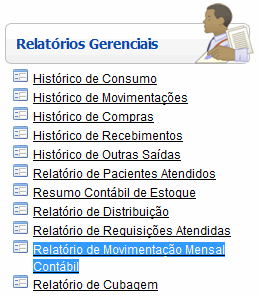
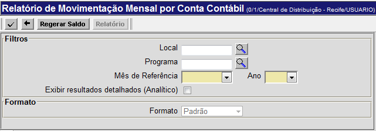

Relatório de Movimentação Mensal Contábil [ Voltar ]
Utilize esta tela para gerar relatórios contábeis de movimentações mensais. O
relatório pode ser
específico para um local ou programa.
O formulário"Relatório de Movimentação Mensal Contábil"
encontra-se dentro do menu "Relatórios
Gerenciais".

Ao clicar no formulário, a seguinte tela
será exibida:

Para gerar o
relatório, siga os passos abaixo:
1º Passo:
configure os filtros da consulta. Os campos em amarelo são obrigatórios.
- Local. Se desejar, informe aqui um local específico para esta consulta. Clique no botão
 [Procurar] para selecioná-lo a partir de uma listagem contendo todos os locais cadastrados; [Procurar] para selecioná-lo a partir de uma listagem contendo todos os locais cadastrados;
- Programa. Se desejar, informe aqui um programa específico para esta consulta. Clique no botão [Procurar] para selecioná-lo a partir de uma listagem contendo todos os programas cadastrados;
- Mês de Referência/Ano. Especifique nestes campos o mês e ano para esta consulta;
- Exibir resultados detalhados (Analítico). Marque esta opção para exibir resultados detalhados desta consulta;
- Formato. Caso a opção "Exibir resultados detalhados (Analítico)" tenha sido
marcada, você poderá escolher aqui se deseja que os resultados sejam
exibidos de modo Padrão ou Por Programa;
2º
Passo: clique no botão para gerar os dados do relatório. Os resultados da pesquisa serão exibidos na parte inferior da tela. para gerar os dados do relatório. Os resultados da pesquisa serão exibidos na parte inferior da tela. Clique no botão para que o sistema regere e atualize os saldos no sistema.
3° Passo: para visualizar e imprimir o relatório, clique no botão  . . Para imprimir o relatório, clique no botão  [Imprimir]
do navegador. Para voltar à tela anterior, clique em [Imprimir]
do navegador. Para voltar à tela anterior, clique em  [Voltar]. [Voltar].
Ir
para o topo da página
|